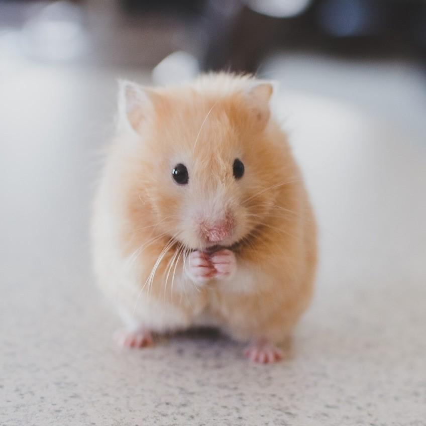
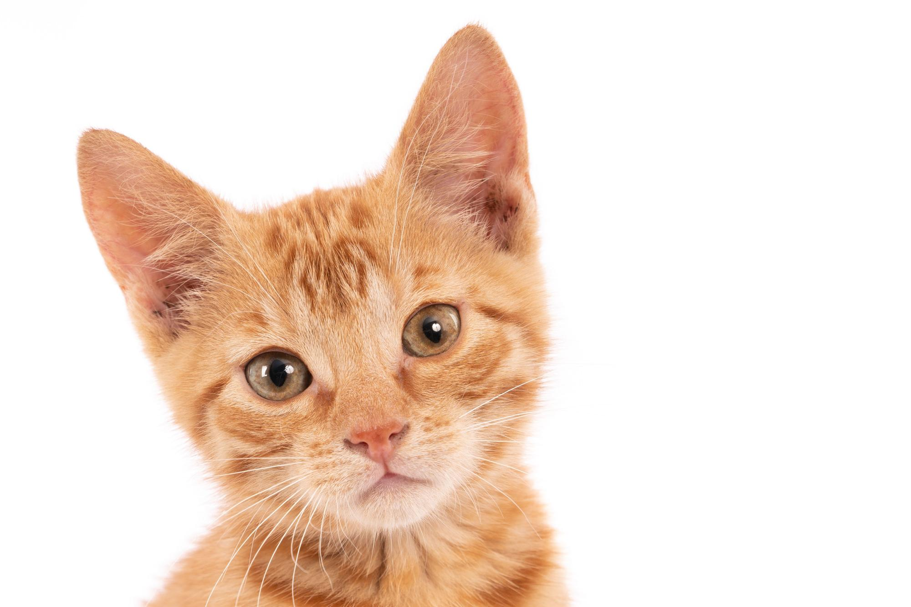
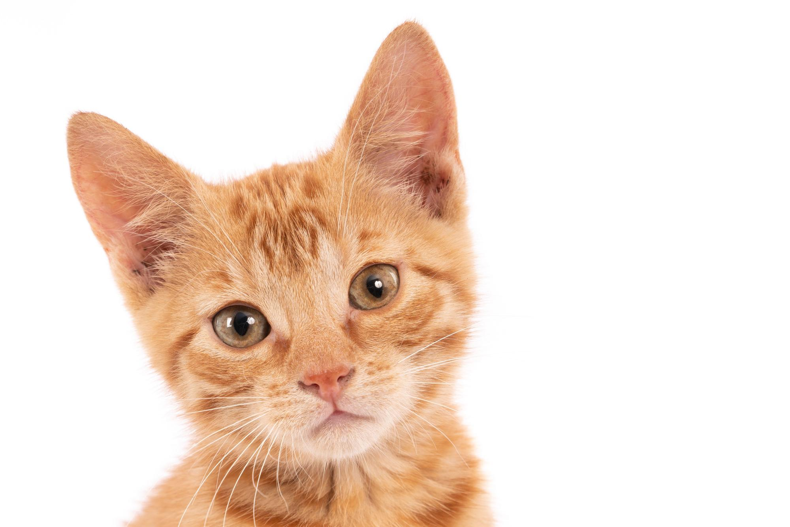

 Hamster Rueda de ejercicio Casita o refugio Material para el nido Rueda de masticar  Gato Caja de arena y pala Rascador Transportador Poste para rascar perro Huesos Correa y collar o arnés Cepillo para el pelaje Bolsas para recoger desechos
 Gato Caja de arena y pala Rascador Transportador Poste para rascar perro Huesos Correa y collar o arnés Cepillo para el pelaje Bolsas para recoger desechos